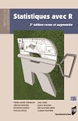
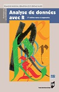
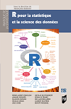

Actualités

 |  |  |  |  |  |  |
1re éd : 2005 | 2012 | 1re éd : 2008 2e éd : 2010 3e éd : 2012 | 2013 | 1re éd : 2009 2nd éd : 2016 | 1re éd : 2011 2nd éd : 2017 | 2018 |
R pour la statistique et la science des données" (2018) |
- Publication du livre R pour la statistique et la science de données (25 octobre 2018)
- El libro "Análisis de datos con R" está disponible gratuitamente: descargar
Blog on missing values and Exploratory Multivariate Data Analysis.
- The 2nd edition of the book Exploratory Multivariate Data Analysis is published. See some reviews.
- La 2ème édition augmentée du livre Analyse de données avec R est disponible depuis le 15 fév 2016.
- 1800 participants for the 2nd session of the MOOC on Exploratory Multivariate Data Analysis (2nd edition) - 3rd session in March 2019
- 5300 participants au MOOC d'analyse des données multidimensionnelles (4ème session) - 5ème session en mars 2019
- Des cours en ligne sur une chaîne Youtube
- Cours d'analyse de données (version française)
- Course on Exploratory multivariate data analysis (in English)
- Directeur de la collection Pratique de la statistique aux Presses Universitaires de Rennes (depuis mars 2012)
- Editeur associé du Journal de la Société Française de Statistique (depuis février 2014)
- Membre du comité éditorial de la collection Pratique R (collection statistique avec R de chez EDP, depuis novembre 2009)
- Un MOOC en sensométrie dont les cours et transparents sont disponibles ici